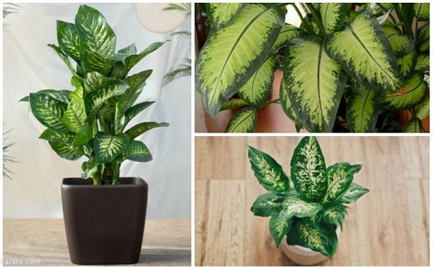
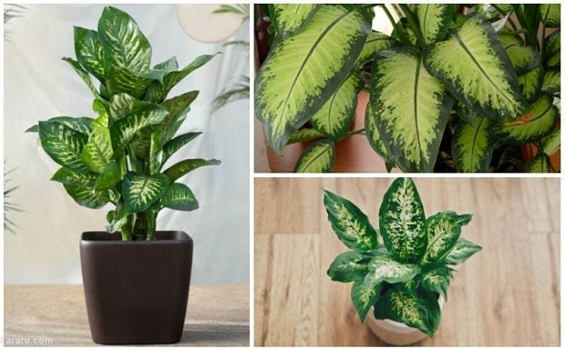

گیاه مونسترا یا برگ انجیری (Monstera deliciosa)
گیاه آپارتمانی مونسترا با نام علمی Monstera deliciosa از خانواده Araceae و بومی جنگلهای گرمسیری جنوب مکزیک و جنوب پاناماست. یاه مونسترا را به دلیل داشتن برگهای سبز چرمی و سوراخدار و میوههای خوش طعمش پرورش میدهند. این گیاه زیبا در ایران به برگ انجیری معروف است. گیاه آپارتمانی مونسترا رشد سریعی دارد و گیاهی مقاوم محسوب میشود. میوه خوشمزه و پرخاصیت مونسترا پس از ۱ سال میرسد. میوهها فلسدار و ظاهری شبیه به خیار دارند.